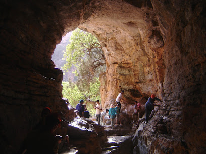

<!DOCTYPE html>
<html lang="fr">

<head>
    <meta charset="UTF-8">
    <meta name="viewport" content="width=device-width, initial-scale=1.0">
    <title>Gestion des Grottes du Maroc</title>
    <link rel="stylesheet" href="style.css">

</head>

<body>
    <!-------------------- deader---------------- -->
    <header>
        <div class="navbare">
            <h1>Gestion des Grottes du Maroc</h1>
            <nav>
                <ul>
                    <li><a href="#home">Accueil</a></li>
                    <li><a href="#about">À propos</a></li>
                    <li><a href="#explore">Explorer les grottes</a></li>
                    <li><a href="#contact">Contact</a></li>
                </ul>
            </nav>
        </div>


        <div class="header_main">
            <div class="test_header">
                <h1>Plate-forme Web pour la gestion des grottes au Maroc</h1>
                <p>La plate-forme Web pour la gestion des grottes au Maroc est un outil numérique conçu pour la
                    préservation et la promotion du patrimoine naturel souterrain marocain. Elle centralise les données
                    sur les grottes, incluant leur localisation, géologie, biodiversité, ainsi que les aspects
                    historiques et culturels. Cette plate-forme propose des fonctionnalités interactives pour les
                    scientifiques, spéléologues et touristes, comme des cartes, des bases de données, des galeries
                    photos, et des outils de collaboration. Elle sert aussi de portail éducatif pour sensibiliser à la
                    conservation des grottes et intègre des modules de gestion pour le suivi et la conservation des
                    sites, soutenant ainsi la recherche scientifique et le tourisme durable.</p>
            </div>
            <div class="bac">
                
            </div>

        </div>


    </header>
    <main>
        <div class="groutte1">
            <div class="margin">
                <div class="image_maps">
                    <div class="map-container">
                        
                    </div>
                    <div class="image-container">
                        <!-- Insérez votre image ici -->
                        
                    </div>
                </div>
                <div class="text-container">
                    <h1>Grottes d'Hercule (Tanger)</h1>
                    <p>A 14 km à l'ouest de Tanger, se trouvent les Grottes d'Hercule. Étonnant et magnifique, ce site
                        archéologique est surtout rempli de mystère. Louez une voiture à Tanger pour aller découvrir ce
                        lieu hors du commun.
                    </p>
                    <p>Situées non loin du centre ville de Tanger, les Grottes d'Hercule font certainement partie des
                        endroits les plus beaux et le plus énigmatiques du Maroc. De l'intérieur, et par leurs entrées
                        tournées vers l'Atlantique, on aperçoit le coucher de soleil et le Cap du Détroit de Gibraltar.
                        Cette ouverture face à la mer a été photographiée des milliers de fois, pour la beauté de la vue
                        bien sûr, mais aussi car elle a la forme de l'Afrique. La vue depuis les Grottes d'Hercule est
                        très populaire, mais ce n'est pas ce qui a rendu ce lieu si célèbre. En effet, si les grottes
                        d'Hercule sont un haut-lieu touristique du Maroc, c'est parce que le site renferme les traces
                        d'une occupation préhistorique ainsi qu'un mystère archéologique. Nul ne sait encore qui a bien
                        pu construire ces grottes qui sont en partie artificielles. Les croyances locales veulent que ce
                        soit une civilisation ancienne (de l'époque néolithique, selon certains). Et ce n'est pas la
                        seule légende qui entoure les Grottes d'Hercule. Si elles portent ce nom, c'est que ce serait
                        dans ces lieux que la figure mythologique serait venue se reposer après ses 12 travaux. Les
                        mystères et légendes qui entourent les Grottes d'Hercule sont nombreux et basés sur peu
                        d'éléments. Mais une chose est sûre : le site est magnifique et vaut le détour. Le petit conseil
                        Hertz Maroc : louez une voiture économique pour aller voir les Grottes d'Hercule.</p>
                </div>
            </div>
        </div>
        <div class="groutte2">
            <div class="margin">
                <div class="image_maps">
                    <div class="map-container">
                        
                    </div>
                    <div class="image-container">
                        <!-- Insérez votre image ici -->
                        
                    </div>
                </div>
                <div class="text-container">
                    <h1>TAZA CAVE FRIOUATO</h1>
                    <p>
                        Situé à environ 20 kilomètres de la ville de Taza, il est considéré comme l'une des grottes les
                        plus profondes du monde, s'étendant sur plus de 3,5 kilomètres sous terre. C'est une attraction
                        pour les spécialistes des grottes, les aventuriers et les visiteurs. Admirez un escalier de 702
                        marches menant à un palais souterrain. Les galeries semblent hantées par d'étranges figures, ce
                        sont des stalactites et des stalagmites.
                    </p>
                    <p>Après avoir exploré Taza et pris un déjeuner rapide, nous nous sommes dirigés vers les Grottes de
                        Friouato, à environ 15 miles au sud-ouest de Taza. En montant dans les montagnes de l'Atlas
                        moyen, passant devant les cascades et les locaux vendant du cœur de palmier fraîchement coupé,
                        les oliveraies et les amandiers ont été remplacés par des cèdres, des pins et des chênes. Il
                        faut le répéter : les vues sont exceptionnelles ! À plus haute altitude, la pluie que nous
                        avions eue à Fès s'est manifestée ici sous forme de fortes chutes de neige, et nous avons
                        continué lentement et prudemment sur les routes enneigées.

                        Situées dans le Parc National de Tazekka, les Grottes de Friouato sont plus communément connues
                        en français sous le nom de « Gouffre de Friouato » ou « Grotte de Friouato ». J'ai toujours
                        pensé que « Friouato » était un choix de nom étrange pour le système de grottes souterraines
                        juste à l'extérieur de Taza. Je supposais que c'était d'après un spéléologue italien qui les
                        avait découvertes, mais j'ai été ravi d'apprendre qu'il y avait deux versions populaires, et
                        toutes deux romantiques. La première est une version marocaine de Roméo et Juliette : « Fri »
                        (le Roméo marocain) était amoureux de « Wato » (la Juliette marocaine). Ils étaient follement
                        amoureux l'un de l'autre, cependant, les deux familles étaient contre l'union. Un jour, le
                        couple a disparu, pour être retrouvé plus tard à la base de l'entrée principale de la grotte,
                        ayant apparemment plongé à leur mort, unis pour toujours dans l'amour. La deuxième version,
                        d'origine berbère, a également une fin malheureuse.</p>
                </div>
            </div>
        </div>

        <div class="groutte3">
            <div class="margin">
                <div class="image_maps">
                    <div class="map-container">
                        
                    </div>
                    <div class="image-container">
                        <!-- Insérez votre image ici -->
                        
                    </div>
                </div>
                <div class="text-container">
                    <h1>Grotte Chaara Et Randonnée Au Parc Tazekka</h1>
                    <p>
                        C’est au cœur du Moyen-Atlas, non loin de la ville de Taza, que se trouve le parc national de
                        Tazekka, un joyau de la nature et un véritable paradis pour les amateurs de randonnées pédestres
                        et de profondeurs souterraines.
                        La grotte Chaara est une rivière souterraine de plus de 7,5Km, située dans le parc national de
                        tazekka à l’extrême nord du moyen atlas. Elle est décrite comme un toboggan caché par une forêt
                        de chênes verts, débouchant sur une immense galerie annonçant le départ d’une balade souterraine
                        du Moyen Atlas, dans le lit même de la rivière Chaâra. Rivière permanente et active le long des
                        quatre saisons. Le total de son développement, fixé provisoirement à 7.650 m fait d’elle la
                        deuxième plus longue grotte du Maroc et la quatrième d’Afrique. </p>
                    <p>Moments fort
                        - L’exploration de la deuxième plus longue grotte du Maroc grotte Chaara<br>
                        - Découverte et exploration du parc Tazekka La vue dont on jouira depuis cette hauteur
                        privilégiée et la sérénité des lieux valent vraiment le déplacement.<br>
                        - Echange culturel et Rencontre des habitants locaux.<br>
                        - L’exploration de la région de moyen atlas et le parc tazzeka offre de beaux panoramas sur les
                        plus hauts sommets de la région dont bouiblane.

                    </p>
                </div>
            </div>
        </div>

        <div class="groutte4">
            <div class="margin">
                <div class="image_maps">
                    <div class="map-container">
                        
                    </div>
                    <div class="image-container">
                        <!-- Insérez votre image ici -->
                        
                    </div>
                </div>
                <div class="text-container">
                    <h1>Grotte de Win-Timdouine </h1>
                    <p>
                        Situé à plus de 60 km d’Agadir, et à 1.400 m d’altitude, la grotte de Win-Timdouine est une
                        œuvre de la nature où l’action de l’eau a dissous les roches pour creuser 18 km de galeries. Ce
                        réseau souterrain est parmi les plus longues cavités du continent africain (troisième place).
                        D’ailleurs, l’appellation Win-Timdouine, qui signifie grotte des lacs en amazigh, illustre
                        l’existence de lacs au sein de cette grotte qui renferme une faune diversifiée.

                    </p>
                    <p>
                        Constituant une grande plate-forme naturelle de découverte, la grotte de Win–Timdouine a attiré
                        un bon nombre de spéléologues et de scientifiques qui ont effectué de grandes recherches au sein
                        de ce réseau souterrain. Cependant, la grotte est aujourd’hui loin de livrer tous ses secrets.
                        Les découvertes des spéléologues et des scientifiques travaillant sur l’exploration des
                        richesses de cette cavité souterraine nous éclairent continuellement sur ce monde souterrain et
                        sa biodiversité. «Cette grotte constitue un vrai laboratoire de découverte pour une multitude de
                        disciplines scientifiques. En effet, les chercheurs dans divers domaines scientifiques trouvent
                        dans cette grotte une plate-forme de découverte extraordinaire. Citons entre autres l’histoire
                        sismique, l’archéologie, le paléomagnétisme, l’hydrologie et l’hydrogéologie», souligne
                        Alaeddine Belfoul, enseignant-chercheur à la faculté des Sciences d’Agadir et membre de
                        l’Association spéléologie Agadir (ASA).

                    </p>
                </div>
            </div>
        </div>

        <div class="groutte5">
            <div class="margin">
                <div class="image_maps">
                    <div class="map-container">
                        
                    </div>
                    <div class="image-container">
                        <!-- Insérez votre image ici -->
                        
                    </div>
                </div>
                <div class="text-container">
                    <h1>Grotte Des Pigeons
                    </h1>
                    <p>La grotte des Pigeons, ou grotte de Taforalt ou Ifri n Tafoughalt , est un site préhistorique situé au Maroc, près du village de Tafoughalt, dans le massif des Béni-Snassen. Elle a été signalée pour la première fois en 1908 mais elle n'a connu des fouilles importantes qu'à une époque plus tardive : par Armand Ruhlmann (1944-1947), ensuite par l'abbé Jean Roche (1950-1955, 1969-1977, en 1980 en collaboration avec Jean-Paul Raynal), et enfin depuis 2003 par Abdeljalil Bouzouggar (Institut national des sciences de l'archéologie et du patrimoine, Rabat-Maroc) et Nick Barton (université d'Oxford, Royaume-Uni).
                    </p>
                    <p>Les fouilles n'ont pas révélé de présence néolithique. Si la grotte fut occupée au Néolithique, les restes de cette habitation auraient été enlevés par l'armée française au début des années 1940 pour faire place à de l'artillerie. Seules les occupations paléolithiques ont été rapportées aussi bien par les anciens travaux1 que les nouvelles recherches.</p>
                </div>
            </div>


            <div class="groutte6">
                <div class="margin">
                    <div class="image_maps">
                        <div class="map-container">
                            
                        </div>
                        <div class="image-container">
                            <!-- Insérez votre image ici -->
                            
                        </div>
                    </div>
                    <div class="text-container">
                        <h1>La Grotte du Chameau</h1>
                        <p>La grotte du Chameau, nommée ainsi à cause de la forme de la montagne au-dessus. Actuellement
                            fermée faute d'exploitant touristique.

                        </p>
                        <p>
                            Un haut lieu de spéléologie où les stalagmites et les stalactites forment un rempart de
                            multiples
                            colonnes patiemment sculptées dans le calcaire par les eaux d'infiltration durant des
                            millénaires
                            Havre de paix, de beauté et de calme où l'on peut se réfugier loin de la population et du
                            stress des
                            grandes villes
                            Un haut lieu de spéléologie <br>
                             Nature du site : Site archéologique <br>
                             Situation géographique: <br>
                            La grotte s'ouvre dans la vallée de l'Oued Farrouj, affluent de l'Oued Zegzel au cœur du
                            massif des
                            Béni-Snassen . Elle est située à 12 Km au sud de Berkane et à 64 Km au Nord -Ouest
                            d'Oujda<br>
                             Accès au site <br>
                            - De Berkane (13 Km). <br>
                            - D'Oujda par Tafoghalt (64 Km) <br>
                             Description du site
                            La grotte avec ses stalactites et ses stalagmites spectaculaires est creusée dans des
                            calcaires du
                            lias inférieur sur la rive droite de l'Oued Farrouj.
                            Elle présente deux entrées, l'une à 5m au dessus de l'Oued, l'autre 25 m plus haut.
                        </p>
                    </div>
                </div>
    </main>
</body>

</html>